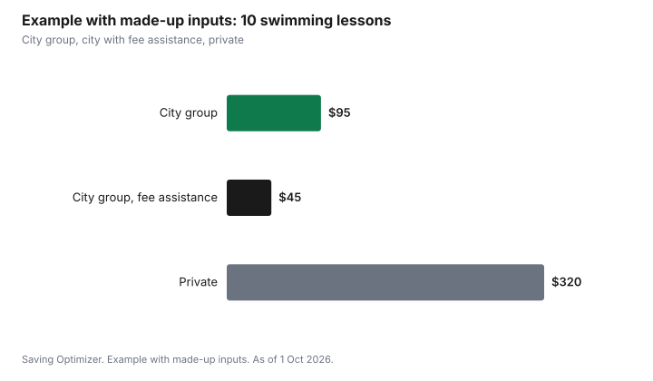

Kids · Canada
Swimming Lessons in Canada: City Programs, Registration Day and Fee Assistance

Swimming lessons in Canada usually cost least through your city's recreation department, and the hard part is getting a spot on registration day. Set up your account before registration opens, have a first choice and two backups, and join the waitlist if classes fill. Many cities run fee assistance programs for lower-income residents, and charities such as Jumpstart and KidSport fund activity fees. Private lessons cost more per class but can move a child through a level faster.
Key takeaways
- City recreation programs are usually the lowest-cost lessons. Many use the Lifesaving Society's Swim for Life levels.
- Registration day: create the account and add family members ahead of time, know the course codes, and have two backups.
- Ask your city about its recreation fee assistance program. Eligibility is usually income-based.
- Charitable grants: Canadian Tire Jumpstart and KidSport fund activity fees. Check eligibility and amounts on their sites.
- Example with made-up inputs: a city season at $95 versus private lessons at $320 for the same number of classes.
City recreation programs
Most Canadian cities run group swimming lessons at municipal pools in seasons of several weeks. Many follow the Lifesaving Society's Swim for Life program, with levels by age and skill. The Canadian Red Cross ended its swimming lesson program, so older report cards with Red Cross levels map to new levels; ask the pool which level fits.
Read the program guide for the season dates, age groups, and whether the price is lower for residents. Some cities have separate registration dates for different areas or programs.
Winning registration day
- Create or update the family account and add each child before registration opens.
- Put money on the account or have a card ready.
- Write down the course codes for your first choice and two backups at different times or pools.
- Log in a few minutes early. Register the hardest-to-get class first.
- If everything fills, join the waitlist. Spots often open before the first class.
Private and semi-private lessons
Private lessons give one child the instructor's full attention, and semi-private split it between two or three. They cost more per class, but a nervous swimmer or a child stuck on a level may progress faster. Some city pools offer them, and private swim schools do too. Compare the price per class and how many classes it usually takes to pass a level.
Fee assistance and grants
Many municipalities run recreation fee assistance programs that give eligible residents a credit or discount on programs, often based on household income. Search your city's name with "recreation fee assistance" or ask at the community centre. Apply before registration day, because approval can take time.
Charities also help. Canadian Tire Jumpstart and KidSport fund registration fees for eligible children, usually through applications or local chapters. Eligibility and amounts are on their sites. Some provinces offer a children's activity tax credit; the activity credits guide lists them, and the fee assistance guide covers grants in detail.
Understanding the levels
Lifesaving Society Canada's Swim for Life program, used by many municipal pools, has preschool levels for younger children, numbered Swimmer levels for school-age children, and Canadian Swim Patrol and Bronze awards for older swimmers moving toward lifesaving and lifeguard training. Pools may name levels differently; ask the pool which level fits based on your child's last report card. If your child has an old Red Cross report card, ask the pool to match it to the current levels.
| Stage | Typical swimmers | What it leads to |
|---|---|---|
| Parent and tot, preschool levels | Babies to preschoolers | Comfort in the water and basic skills |
| Swimmer levels | School-age children | Strokes, endurance and water safety |
| Canadian Swim Patrol | Older children | Lifesaving skills |
| Bronze awards | Teens | Lifesaving awards and the path to lifeguard and instructor certifications |
Step by step: from lessons to a summer job
- Finish the Swimmer levels and keep swimming between sessions.
- Take Swim Patrol and Bronze awards, which build lifesaving skills.
- Look at the age and award prerequisites for National Lifeguard and swim instructor courses in your province.
- Ask your city whether it offers subsidized leadership courses or hires from its own programs.
- Courses cost money, but a lifeguard or instructor job can pay it back; check the prerequisites and costs with your provincial Lifesaving Society branch.
Practice between sessions
Most children pass levels faster with practice. Public and family swims at municipal pools are often low cost, and some cities offer free swims at certain times or for children with a recreation card. Practise the skills from the last report card rather than general play, and keep swim sessions short and regular.
Common mistakes
- Registering for the wrong level; ask the pool to place your child if unsure.
- Only trying for the most popular time slot.
- Applying for fee assistance after registration day.
- Skipping practice between sessions and repeating the same level.
- Paying for private lessons before trying a group season.
Example with made-up inputs: one season, two ways
These numbers are an example with made-up inputs, not program prices. A city season of 10 group lessons costs $95. Ten private lessons cost $320. With a made-up city fee assistance credit of $50, the group season costs the family $45.
| Option | Season cost |
|---|---|
| City group lessons | $95 |
| City group with fee assistance | $45 |
| Private lessons | $320 |

Sources
- Lifesaving Society Canada, Swim for Life program, as of 1 Oct 2026.
- Canadian Red Cross, swimming and water safety program changes, as of 1 Oct 2026.
- Canadian Tire Jumpstart and KidSport Canada, as of 1 Oct 2026. Eligibility and amounts on each site; none quoted here.
- Provincial children's activity credits: see the activity credits guide for Quebec, Manitoba, Nova Scotia and Yukon.
- Lifesaving Society Canada, Swim for Life, Canadian Swim Patrol and Bronze awards, as of 1 Oct 2026.
- Every price and credit in the example table and chart is a made-up input.
Frequently asked questions
Where can I find cheap swimming lessons in Canada?
City recreation departments usually offer the lowest-cost group lessons at municipal pools. Read your city's program guide for dates, ages and resident rates.
How do I get a spot on swimming lesson registration day?
Set up your family account ahead of time, have course codes for a first choice and two backups, log in early, and join the waitlist if classes fill, since spots often open before the first class.
Is there financial help for swimming lessons?
Many cities have recreation fee assistance programs for eligible residents, and charities such as Canadian Tire Jumpstart and KidSport fund activity fees. Check eligibility on each program's site.
Does the Red Cross still offer swimming lessons?
The Canadian Red Cross ended its swimming lesson program. Many pools now use the Lifesaving Society's Swim for Life levels; ask the pool which level matches an older Red Cross report card.
Are private swimming lessons worth it?
They cost more per class but can help a nervous swimmer or a child stuck on a level. Compare price per class and how many classes it usually takes to pass a level.
What comes after the Swimmer levels?
Canadian Swim Patrol and Bronze awards build lifesaving skills and lead toward lifeguard and swim instructor certifications. Check prerequisites with your provincial Lifesaving Society branch.
How can my child pass swimming levels faster?
Practise the skills from the last report card between sessions, using public or family swims at your city's pool.
Researched and drafted with AI assistance and fact-checked against official Canadian sources. How we create content.
Disclosure: Swim schools and programs are described as offer types; none is ranked. Saving Optimizer may earn a commission if a partner link is added later; no partnership is claimed. Education only.